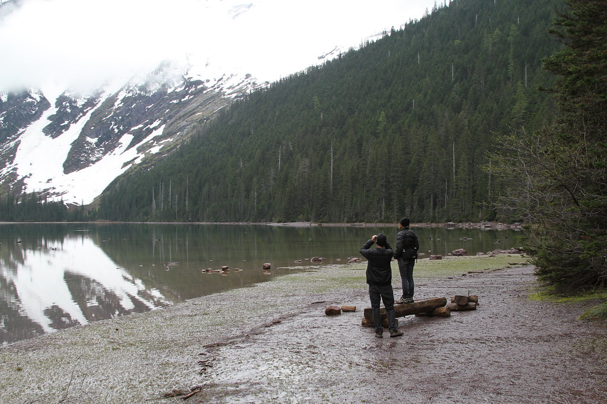

Hiking

Hiking is an activity I tend to do weekly, over the weekends with friends. I prepare a few snacks, plenty of water bottles, first aid, and minor tools for the trip. It can be a physically and mentally straining challenge yet highly rewarding. Hiking elevates my senses to everything around me and invites my sense of adventure. It presents breath taking views and provides the moment to really enjoy the scene.
Hiking is an activity that can be done with others and it is something shared between each one. There are plenty of locations yet explored and no two are the same. It is also something that keeps you active and healthy, helping to build endurance and strength. It really does enhance the quality of life.
Fitness
Exercising is a daily routine I embedded in my life since 14 years old. It keeps me in shape, healthy, and from looking like a panda, especially since I love food. It builds not just strength and endurance, but confidence. It helps your body do its daily tasks at a more efficient manner and builds up the immune system.
It is also a daily debate whether to go or not. After a long day at work or getting the extra hours of sleep, going to the gym is the last thing anyone would really want to do. But once you’re there, you’re more than pumped. So, exercising is also a very high mental challenge indeed.
Video Games

Another hobby includes video games. It is another stress relieving activity and can be a great method to exercise the brain. A lot of games these days, particularly a game I play, helps exercise strategic teamwork, trial and error, and thinking outside the box to overcome obstacles whether facing in-game enemies or against other players.
Teamwork requires the participation and best from each player. The team needs to communicate, learn and memorize mechanics, and optimize their game play to accomplish certain achievements, for example no death, speed, and hard mode.